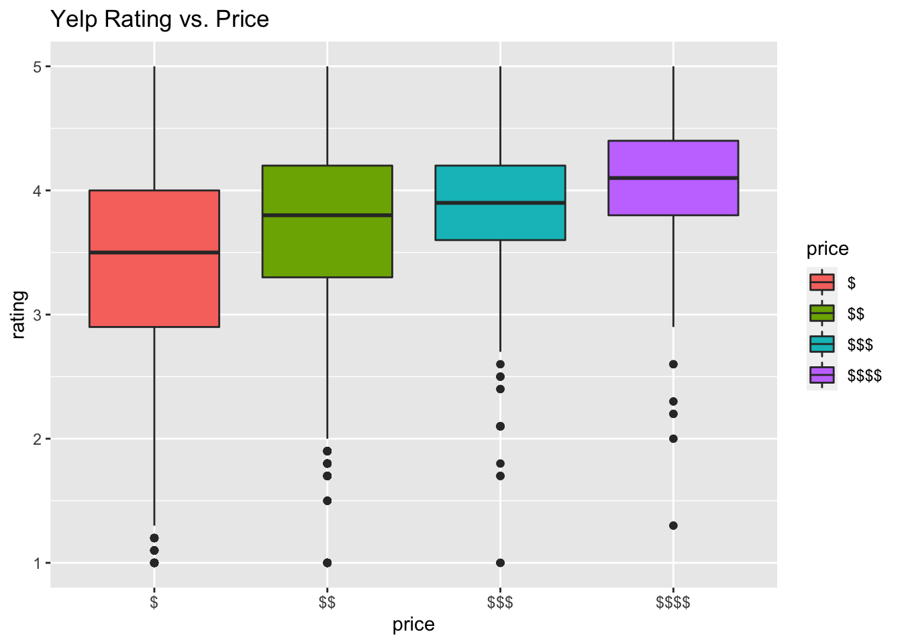
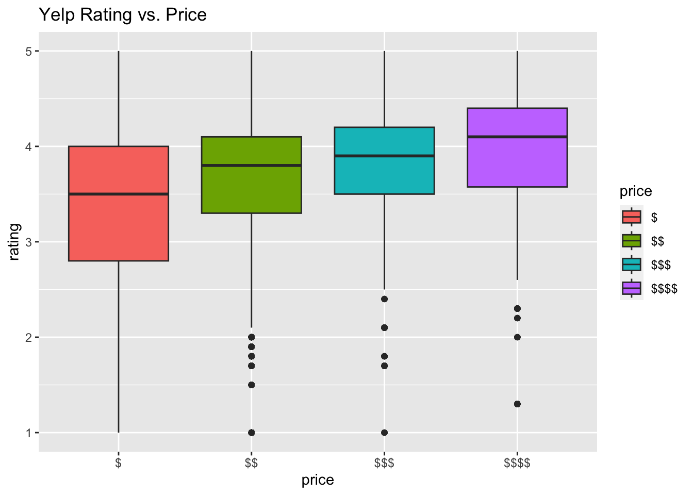
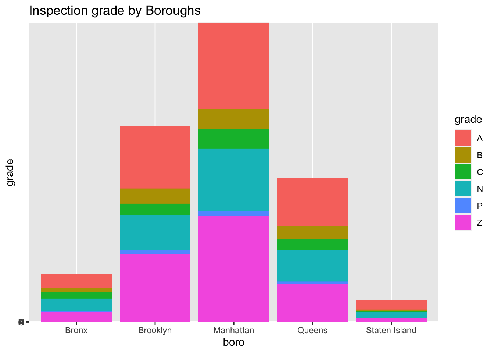
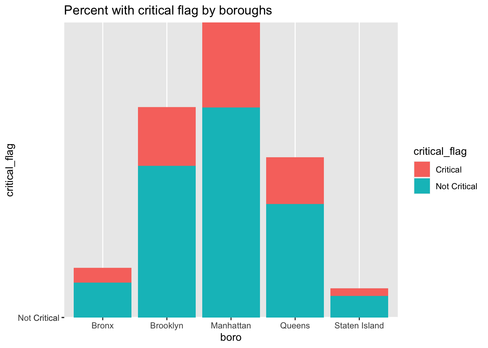

Exploratory Analysis
boro vs cuisine
## `summarise()` has grouped output by 'boro'. You can override using the
## `.groups` argument.price vs cuisine
price_cuisine<-
inspection_raw %>%
select(dba,boro,cuisine_description,critical_flag,score,grade,grade_date,inspection_type,latitude,longitude,rating,review_num,price) %>%
drop_na(boro,price) %>%
mutate(price=as.factor(price)) %>%
group_by(price)%>%
count(cuisine_description) %>%
mutate(cuisine_description=fct_reorder(cuisine_description,n)) %>%
filter(min_rank(desc(n))<=10) %>%
ggplot(aes(x=cuisine_description,y=n,fill=price))+
geom_bar(position="dodge", stat="identity")+
theme(axis.text.x = element_text(angle = 90, vjust = 0.5, hjust = 1))+
theme(axis.text.x = element_text(size = 5))+
labs(
x="Cuisine type",
y="Number")+
facet_grid(~price)
ggplotly(price_cuisine)Price vs. borough
price_boro<-
inspection_raw %>%
select(dba,boro,cuisine_description,critical_flag,score,grade,grade_date,inspection_type,latitude,longitude,rating,review_num,price) %>%
drop_na(boro,price) %>%
mutate(boro = fct_infreq(boro),
price=as.factor(price)) %>%
ggplot(aes(x = boro, fill = price)) +
geom_bar()
ggplotly(price_boro)review number vs. rating score (exclude extreme outliers)
review_num_rating<-
inspection_raw %>%
select(dba,boro,cuisine_description,critical_flag,score,grade,grade_date,inspection_type,latitude,longitude,rating,review_num,price) %>% drop_na(boro,price,rating) %>%
filter(!review_num<=100) %>%
group_by(rating) %>%
summarize(sum_review=sum(review_num)) %>%
ggplot(aes(y=sum_review,x=rating))+
geom_point()+
geom_smooth()+
labs(
x="Sum of review_numbers",
y="Rating"
)
ggplotly(review_num_rating)## `geom_smooth()` using method = 'loess' and formula = 'y ~ x'top_10 violation
inspection_raw = read_csv("./data/inspection_sub_all_date.csv") %>%
janitor::clean_names() %>%
mutate(
violation_description = as.factor(violation_description)
) ## Warning: One or more parsing issues, call `problems()` on your data frame for details,
## e.g.:
## dat <- vroom(...)
## problems(dat)## Rows: 54562 Columns: 32
## ── Column specification ──────────────────────────────────────────────────────
## Delimiter: ","
## chr (17): dba, boro, building, street, cuisine_description, action, violati...
## dbl (12): camis, zipcode, phone, score, latitude, longitude, community_boar...
## date (3): inspection_date, grade_date, record_date
##
## ℹ Use `spec()` to retrieve the full column specification for this data.
## ℹ Specify the column types or set `show_col_types = FALSE` to quiet this message.top_10_vio = inspection_raw %>%
group_by(violation_description) %>%
summarize(
n = n()
) %>%
mutate(
rank = rank(-n, ties.method = "first")
) %>%
filter(rank <=10) %>%
arrange(desc(n)) %>% mutate(
rank = as.factor(rank)
) %>%
mutate(
abb_violation = fct_recode(
rank,
"Non-food contact surface improperly constructed" = "1",
"Food contact surface not properly cleaned" = "2",
"Unacceptable materials" = "3",
"Facility not vermin proof" = "4",
"Not free of harborage" = "5",
"Evidence of mice or live mice present" = "6",
"Filth flies or food/refuse/sewage with FRSA flies" = "7",
"Cold CT food held above 41 F" = "8",
"Cold food item held above 41 F" = "9",
"Evidence of mice or live mice in establishment’s food or non-food areas" = "10"
)
)
top_10_vio %>%
ggplot(aes(x = rank, y = n, fill = n), data = .)+geom_bar(stat="identity")+labs(x = "violation type", y = "frequency", caption = "Exact violation type and associated frquency is shown in the following table")
top_10_vio %>%
select(abb_violation, n) %>%
knitr::kable()| abb_violation | n |
|---|---|
| Non-food contact surface improperly constructed | 3851 |
| Food contact surface not properly cleaned | 3832 |
| Unacceptable materials | 3386 |
| Facility not vermin proof | 3368 |
| Not free of harborage | 3198 |
| Evidence of mice or live mice present | 2125 |
| Filth flies or food/refuse/sewage with FRSA flies | 1873 |
| Cold CT food held above 41 F | 1824 |
| Cold food item held above 41 F | 1698 |
| Evidence of mice or live mice in establishment’s food or non-food areas | 1614 |
top 10 violations vs. cuisine type
vio_cuisine_bar<-
inspection_raw %>%
filter(violation_description %in% top_10_vio$violation_description) %>%
group_by(violation_description,cuisine_description) %>%
summarize(n_obs=n()) %>%
filter(min_rank(desc(n_obs))<=5) %>%
left_join(top_10_vio) %>%
select(abb_violation,cuisine_description,n_obs,rank) %>%
ggplot(aes(x=cuisine_description
,y=n_obs,fill=cuisine_description))+
geom_bar(position="dodge", stat="identity")+
theme(axis.text.x = element_text(angle = 90, vjust = 0.5, hjust = 1))+
theme(axis.text.x = element_text(size = 4))+
labs(
x="top 5 cuisine types at top 10 most frequently appeared violation",
y="Number"
)+
facet_grid(~rank)## `summarise()` has grouped output by 'violation_description'. You can override
## using the `.groups` argument.
## Joining, by = "violation_description"
## Adding missing grouping variables: `violation_description`ggplotly(vio_cuisine_bar)grade associated with the inspection vs. boro / cuisine type
grade_boro<-
inspection_raw %>%
filter(grade %in% c("A","B","C")) %>%
mutate(boro=fct_infreq(boro)) %>%
ggplot(aes(x = boro, fill = grade))+
geom_bar()+
labs(
x="Borough",
y="Number"
)
top_10_cuisine<-
inspection_raw %>%
filter(grade %in% c("A","B","C")) %>%
group_by(cuisine_description) %>%
summarise(n_obs=n()) %>%
filter(min_rank(desc(n_obs))<=10)
grade_cuisine<-
inspection_raw %>%
filter(grade %in% c("A","B","C") & cuisine_description %in% top_10_cuisine$cuisine_description) %>%
mutate(cuisine_description=fct_infreq(cuisine_description)) %>%
ggplot(aes(x=cuisine_description,fill=grade))+
geom_bar()+
theme(axis.text.x = element_text(angle = 90, vjust = 0.5, hjust = 1))+
labs(
x="Cuisine",
y="Number"
)
grade_boro/grade_cuisine
## Yelp Rating vs. price boxplot
inspection_raw %>%
filter(!is.na(price)) %>%
ggplot(aes(x = price, y = rating, fill = price), data = .)+geom_boxplot()+labs(title = "Yelp Rating vs. Price")
inspection_raw %>%
filter(!is.na(grade),!is.na(boro)) %>%
ggplot(aes(x = boro, y = grade, fill = grade), data =.) + geom_bar(stat = "identity", position="stack") + labs(title = "Inspection grade by Boroughs")
inspection_raw %>%
filter(!is.na(grade),!is.na(boro)) %>%
filter(critical_flag == c("Critical", "Not Critical")) %>%
ggplot(aes(x = boro, y = critical_flag, fill = critical_flag), data =.) + geom_bar(stat = "identity", position="stack") + labs(title = "Percent with critical flag by boroughs")